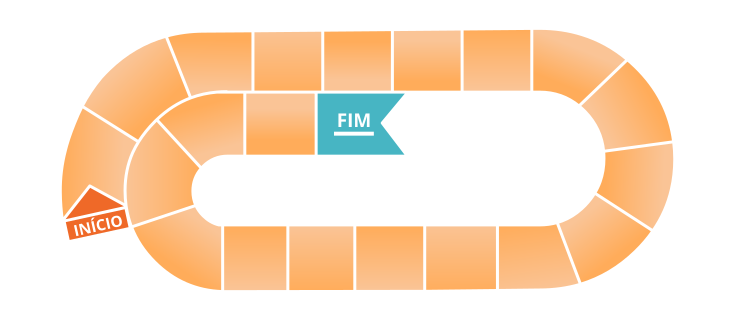

POLÍTICAS PÚBLICAS EM SAÚDE
POLÍTICAS PÚBLICAS EM SAÚDE
O Ministério da Saúde listou atividades que podem ser desenvolvidas para enfrentar as barreiras de equidade a nível individual, dos profissionais e dos serviços e sistemas de saúde. Embarque no tabuleiro de conhecimento e aperte o play quando estiver preparado.
0
1
Chama atenção para o conjunto de relações institucionais envolvidas no processo de implementação, envolvendo tanto articulações entre órgãos governamentais e organizações do setor privado e da sociedade civil. O foco se volta para identificação das implicações de falhas de articulação e conflitos interinstitucionais sobre os segmentos específicos do público atendido e para a existência de compromissos institucionais e instrumentos de gestão pró-equidade.
X
Aponta para a existência e operação de mecanismos de participação social e para a representação institucional de pontos de vistas e experiências de segmentos específicos do público nos processos de implementação, seja via organizações governamentais, não governamentais, ou por meio do envolvimento direto de pessoas e grupos historicamente em desvantagem nos processos institucionais de decisão, definição de metas, estratégias etc.
2
X
3
Coloca em questão os processos de comunicação, divulgação e acesso à informação, visando à mobilização das usuárias do programa/serviço. O foco privilegia os esforços de comunicação e disponibilização de informação relevante para segmentos historicamente em desvantagem, por meio de linguagem adequada e adaptada, reduzindo custos de aprendizado e ampliando as possibilidades de engajamento do público a ser atendido.
X
Chama atenção para os momentos e experiências de interação entre as usuárias e os serviços/programas. O foco aqui se dá sobre as exigências que são impostas sobre as usuárias para o envolvimento com a oferta pública, sobre as normas e os instrumentos que medeiam a relação entre o público e os serviços, e sobre os comportamentos e as práticas das agentes públicas frente às atendidas.
4
X
5
Chama atenção para os processos de monitoramento da execução e avaliação dos resultados e efeitos da política, serviço ou programa em questão. O foco é na produção e no uso (retroalimentação) de informações sobre o atendimento a públicos específicos e sobre os efeitos (não pretendidos) derivados do envolvimento com as ofertas públicas, considerando também os esforços de incorporação de pontos de vistas e experiência de grupos historicamente em desvantagem na produção e análise dos dados.
X